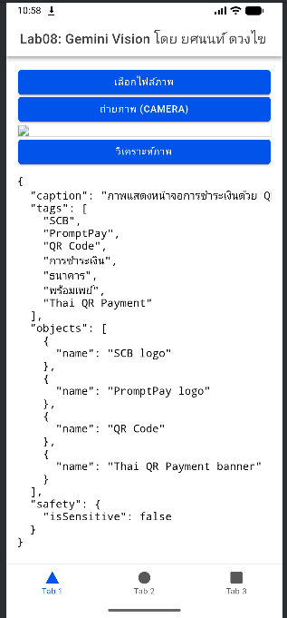
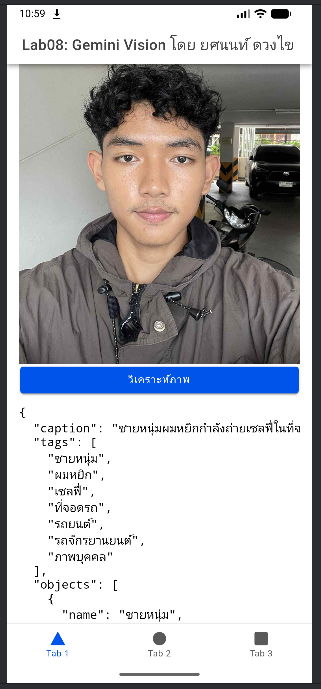
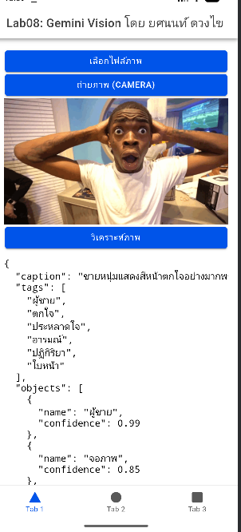
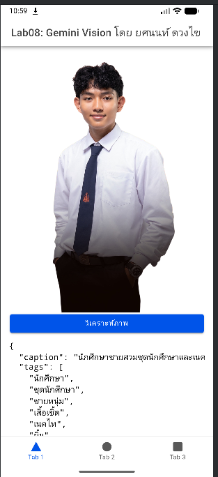
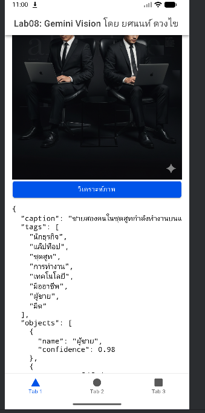

Lab นี้เป็นการพัฒนาแอปพลิเคชันที่ผสานความสามารถของ Generative AI โดยใช้ Gemini Vision API (ผ่าน Firebase App Check เพื่อความปลอดภัย) ร่วมกับโครงสร้างของ Ionic React ผู้ใช้สามารถเลือกรูปภาพจากแกลลอรี หรือถ่ายภาพใหม่ผ่านกล้องมือถือ เพื่อส่งให้ AI ทำการวิเคราะห์ภาพ และรับผลลัพธ์กลับมาแสดงผลบนหน้าจอในรูปแบบ Structured Data (JSON)

1

2

3

4

5
คุณสามารถดาวน์โหลดไฟล์ APK เพื่อทดสอบระบบบนมือถือจริงได้ที่นี่
⬇️ ดาวน์โหลดไฟล์ APK (Lab 08)